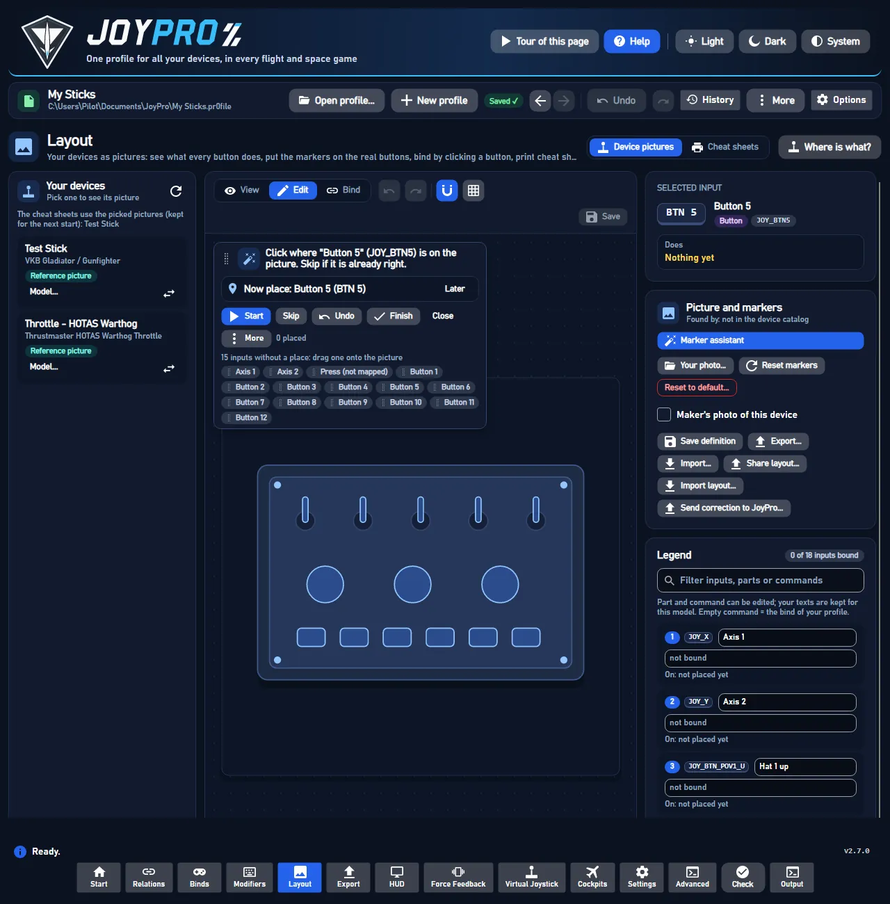
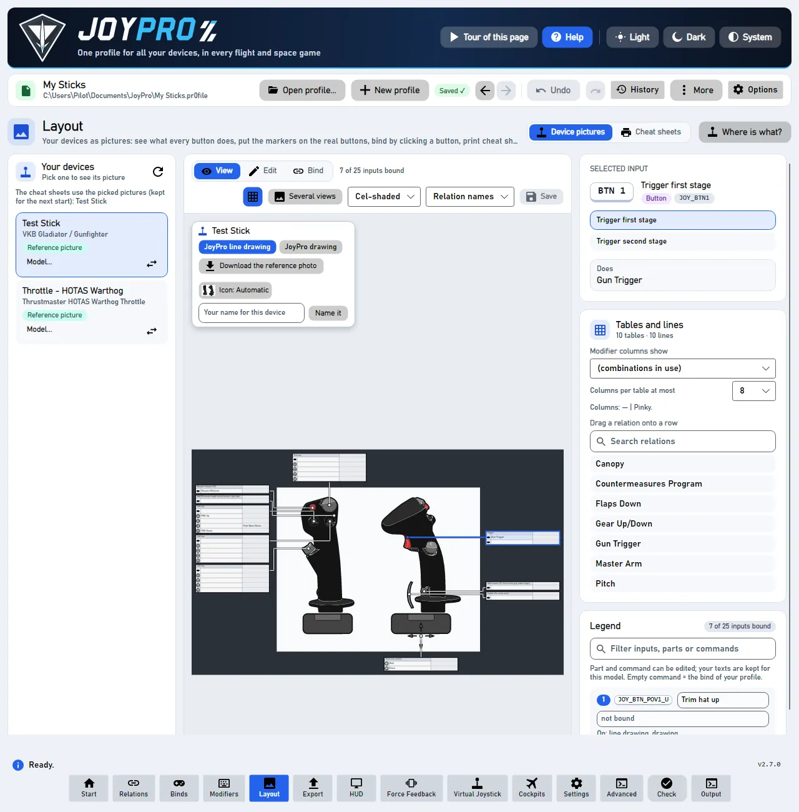

#Bu cihaz kendi stilini kullanıyor
Onay kutusuyazıldıGösterilen cihaza kendine ait bir stil verir: özet kâğıdının renkleri, yazı tipi ve işaretleri.
Cihazın kâğıdıyla birlikte saklanır ve “Yerleşimi paylaş...” ile birlikte gider.
Yerleşim sayfası, cihazlarınızın her birinin resmini her düğmenin, hat'in ve eksenin ne yaptığıyla birlikte gösterir. Üstten geçiş yapılan iki bölümü vardır: Cihaz resimleri (bir seferde bir cihaz: bakma, işaretçileri düzeltme, resim üzerinde atama) ve Özet kâğıtları (tüm cihazlarınızın uçak başına yazdırılabilir resimleri). Bu sayfadaki hiçbir şey bir oyunu değiştirmez; yalnızca Ata modunda yaptığınız bir atama, diğer atamalar gibi profilinize girer.


Ne nerede?, tüm cihazlarınızı içeren bir pencere açar. Her denetimin yanında, o denetimin oyununuzda ne yaptığı yazar. Onu bu sayfanın sağ üstünde, Başlangıç sayfasında ve bildirim alanı menüsünde bulursunuz.
Oyunu takip et, oynadığınız oyuna ve DCS'te uçtuğunuz uçağa geçer. Daha fazlası: Ne nerede? Her düğmenin ne yaptığını görün.


JoyPro, her DCS uçağının kneeboard'una atamalarınızı içeren bir sayfa koyabilir. Onu doğrudan kokpitte okursunuz.
Bir düğmeyi mi değiştirdiniz? Kneeboard'a koy'a yeniden basın: JoyPro kendi sayfalarını değiştirir. Diğer kneeboard sayfalarınız kalır. Daha fazlası: Atamalarımı DCS kneeboard'unda görme.


Yazdırmak veya ikinci bir ekranda tutmak için, her atamanın düğmelerin yanına yazıldığı cihaz resimleri. Cihazları, oyunları ve uçakları işaretleyin, Cihaz başına genel bakış ve/veya Uçak başına bir tane seçin, Özet kâğıtları oluştur'a basın. Resimler (PNG) çıktı klasörüne gider; önizleme onları gösterir.


Bir özet kâğıdı, düğmelerin tek bir uçakta ne yaptığını gösterir; önizleme kutusunda oyunu seçtiğinizde komutlar o oyunun kendi adlarıyla yazılır. Ata modunda yapılan bir atama, Atamalar sayfasında kaydedilen bir atama gibi sonraki dışa aktarmada oyuna yazılır.
Tuvalin üstündeki resim şeridinde cihazın her resmi için bir düğme vardır. 3D düğmesinin yanındaki kutu çizim stilini seçer: Çizgiler veya kalın dış çizgiler altında düz renkler (renkler Ayarlar > Çizimler'de). 3D modeli olan cihazlar 3D görünüm alır: döndürmek için sürükleyin, tekerlek yakınlaştırır, çift tıklama sıfırlar. Özet kâğıtlarının yazdırdığı ve Düzenle modunun üzerinde çalıştığı şey düz çizimdir.
JoyPro bir cihazı USB kimliği, adı ve bildirdiği girişlerle, birkaç yüz modellik bir kataloğa karşı tanır. Ayırt edemediğinde (değiştirilebilir tutamaklı bir taban, birkaç ürün için tek bir USB kimliği, bilinmeyen bir cihaz) resmin üzerinde sorar: adayların kutucuklarıyla Hangisi?; önce En olası, ardından En olasıyı koru, Listede yok: katalogda ara, Şimdi değil. Bilinmeyen bir cihaz için türünü de seçersiniz. Model... > Başka model seç... istediğiniz zaman yeniden sorar.
Gösterilen resim bir parçanın konumunu bilmediğinde ("Bu resimde henüz konum yok"), işaretçi yardımcısı onları bir dakikada yerleştirir:
Cihaz elinizin altında değilse Şimdi yerleştirin: X sonraki girişin adını verir; bir tıklama onu oraya koyar, Sonra onu diğerlerinden sonra sorar ve yeri olmayan girişler resmin üzerine sürükleyebileceğiniz etiketlerdir. Geri al son yerleştirmeyi geri alır; Atla sonraki girişe geçer; Durdur duraklatır. Diğer içinde Eksen, Durdur, Kontrol ekle (JoyPro'nun bilmediği bir kontrol: düğme, anahtar, hat, mini çubuk, döner kodlayıcı, eksen) ve Resimden kaldır bulunur.


Diğer > Bulunan noktalar (deneysel), bir fotoğrafın düğme, hat veya anahtara benzeyen noktalarına ince kesik halkalar çizer. Bir halkanın yakınına yapılan bir tıklama (veya bırakılan bir etiket) işaretçiyi halkanın merkezine koyar. JoyPro bir noktanın hangi giriş olduğunu bilmez, bu yüzden kendiliğinden hiçbir şey yerleştirmez; JoyPro'nun çizimlerinde değil fotoğraflarda çalışır ve çevrimdışı çalışır.
Bilinen konumları olan bir resimde Tablolar (araç çubuğu) JoyPro 1'in özet kâğıdı görünümünü çizer: resmin çevresinde her kontrol grubu için bir tablo, parçalara giden çizgiler, her satırda atanmış ilişki ve ikinci bir sütunda değiştirici ataması. Önizleme kutusu satırların ne göstereceğini seçer: İlişki adları ya da o oyunun kendi menü başlıklarıyla bir oyun ve uçak. Düzenle modunda bir tabloyu (sabitlenir), sağ kenarını, bir çizginin bir parçasını veya bir noktayı sürüklersiniz; yan panelde Değiştirici sütunu, Satır + / Satır −, Sabitlendi, Çizgiyi yeniden yönlendir, Çizgiyi kaldır, Tek tablolara ayır, Yeniden grupla, Otomatik düzenle ve Sıfırla vardır. Bir ilişkiyi bir satıra sürükleyin alanından sürüklenip bir satıra bırakılan ilişki orada atanır.


Birden çok görünüm, bir cihazın daha fazla resmini bir sayfaya koyar (önden ve yandan, böylece her düğme kapsanır): Görünüm ekle, Kendi resminiz..., Yan yana diz, Bu görünümü düzenle, Görünümü kaldır, Sayfayı kaldır, Tek resme dön. Sayfa biçimi yazdırmak için A4 veya Letter, ekran için 16:9 / 21:9 / 32:9'dur. Özet kâğıtları sayfayı yazdırır.
Bir giriş eksikse veya yanlış yerdeyse onu Düzenle modunda düzeltin (sürükleyin, Kontrol ekle, Resimden kaldır, açıklamada yeniden adlandırın). Her şey bu bilgisayarda, JoyPro'nun verilerinin üzerinde sizin katmanınız olarak saklanır. JoyPro'ya düzeltme gönder... değişikliği küçük bir dosya olarak kaydeder ve GitHub'da önceden doldurulmuş bir sorun formu açar; göndermeye orada siz karar verirsiniz. Model... > JoyPro varsayılanına sıfırla... bir cihazdaki tüm değişikliklerinizi kaldırır (önce sorar; Sıfırlamayı geri al onları geri koyar).
V / E / B modlar, N işaretçi yerleştir (yerleşim dosyası), Del kaldır, Ctrl+Z / Ctrl+Y geri al ve yinele, Ctrl+S kaydet, + / - yakınlaştır, 0 veya F sığdır, Düzenle modunda oklar ince kaydırır (Shift: 10 px), Alt yaslamadan sürükler, bırakılan bir resim dosyası cihazın sizin fotoğrafınız olur.
flowchart TD D["Cihaz<br/>(USB kimliği, ad, girişler)"] --> I["DeviceIdentifier<br/>+ cihaz kataloğu"] I --> R["Cihaz başvurusu:<br/>model, parçalar, resimler"] R --> C["DeviceMarkerCanvas<br/>(Görünüm / Düzenle / Ata)"] P["Profil atamaları<br/>(binds list)"] --> C C --> B["binds set"] R --> S["Açıklama kâğıdı:<br/>tablolar ve çizgiler"] S --> L["layout render:<br/>cihaz ve uçak<br/>başına bir PNG"] S --> K["layout kneeboard:<br/>DCS Kneeboard veya<br/>OpenKneeboard"]
MainWindowViewModel.LayoutWorkspace.cs (modlar, geri alma, atama ve serbest bırakma), LayoutReference.cs (başvuru resmi, kaydetme, yardımcının barındırılması), LayoutCallouts.cs (tablolar ve çizgiler), MultiView.cs, CheatSheets.cs, ReferencePhotos.cs, Device3D.cs, DeviceIcons.cs, ModelChoice.cs, LayoutReset.cs, UnmappedPress.cs; DeviceReferenceViewModel*.cs, MarkerAssistantViewModel.cs, SheetStyleViewModel.cs. Tuval: Views/Controls/DeviceMarkerCanvas.cs, CalloutSheetCanvas.cs, MultiViewCanvas.cs.<data>\DeviceReference): grips.json (model yanıtları), Layouts\ (resim başına konumlarınız), Callouts\ (tablolar ve çizgiler), MultiView\, ReferencePhotos\<model>\ (SHA-256 ile denetlenir), Corrections\, ResetBackups\; cihaz tanımlarınız <data>\Devices içinde. Genel kâğıt stili sheet-style.json içinde.engine layout suggest (her cihaz için bir resim, seçtiğiniz bir resim üzerinde bir yerleşim bulur), engine layout render (özet kâğıtları), engine layout image (bir profilin kullandığı yerleşim dosyası), engine layout template-inspect / engine layout template-save (yerleşim dosyası düzenleyicisi), engine layout callouts, engine layout multiview, engine layout titles (oyun menü başlıkları), engine hud devices (bağlı cihazların modelleri), engine devices reference (tanıma, bulunan noktalar), engine binds list.Bu sayfanın arkasındaki, depodan oluşturulan özellik belgeleri:
152 denetim, programın kaynak kodundan okundu: 152 yazıldı, 0 kaynaktaki bilgilerle (araç ipucu, kod yorumu, motor çağrısı), 0 henüz genişletilecek.
Gösterilen cihaza kendine ait bir stil verir: özet kâğıdının renkleri, yazı tipi ve işaretleri.
Cihazın kâğıdıyla birlikte saklanır ve “Yerleşimi paylaş...” ile birlikte gider.
Araç ipucu Ön ayarın tüm renklerini, yazı tipini ve çizimini alır
Kâğıt stiline yukarıda seçilen hazır ayarın tüm renklerini, yazı tipini ve çizimini verir.
Düzenleyici ve özet kâğıtları bunu hemen kullanır; hemen kaydedilir.
Araç ipucu Bu ön ayarınızı sil
Seçilen kendi hazır ayarınızı siler. Kullanılan stil değişmez.
Araç ipucu Bu stili bu adla saklar, daha sonra yeniden uygulayabilirsiniz
Şu anki kâğıt stilini, daha sonra yeniden uygulamak için yukarıda yazılan adla bir hazır ayar olarak saklar.
JoyPro'nun hazır ayarlarından birinin adı reddedilir; aynı adlı kendi hazır ayarınızın yerine geçer.
Araç ipucu Değiştirici ve rengini ekle
Bir değiştirici rengi için bir satır ekler. Değiştiriciyi atamalarınızın onu adlandırdığı gibi yazın: işaretleri ve sütununun üstündeki çubuk o rengi alır.
Bu değiştirici rengini kâğıt stilinden kaldırır; o değiştiriciye sahip atamaların işaretleri yeniden türlerinin rengini alır.
Araç ipucu Bir düğmeye basın, bir ekseni veya Hat'i hareket ettirin: satırı yanar ve işlevi en üstte görünür. Cihazlarınızı yalnızca bu pencere açıkken okur.
Yerleşim penceresi, varsayılan olarak açık: bir düğmeye basın, bir ekseni veya hat'i hareket ettirin, satırı yanar; işlevi en üstte büyük harflerle yazılır.
JoyPro cihazlarınızı yalnızca pencere açık ve simge durumuna küçültülmemişken okur; bir süre giriş olmazsa yalnızca her 250 ms'de bir okur.
Araç ipucu Oynadığınız oyuna ve DCS'te uçtuğunuz uçağa geçer (JoyPro'nun DCS kancası gerekir). Bu olmadan seçiminiz kalır.
Yerleşim penceresi: oynadığınız oyuna ve DCS'te uçtuğunuz uçağa geçer.
Bu olmadan seçiminiz kalır.
Araç ipucu Atamaları yeniden okur (bir şeyi değiştirdikten sonra)
Yerleşim penceresi: atamaları yeniden okur; örneğin “Atamalar” sayfasında bir şeyi değiştirdikten sonra.
Yerleşim penceresini kapatır. JoyPro nerede olduğunu ve ne gösterdiğini hatırlar; bir dahaki sefere orada açılır.
JoyPro kapanırken açık bırakılırsa bir sonraki başlatmada geri gelir.
Araç ipucu Her cihaz, her kontrolün bir oyunda ve uçakta ne yaptığıyla birlikte, kendi penceresinde (ikinci bir monitör için de); bastığınız şey yanar
“Ne nerede?” yerleşim penceresini açar: bir oyun ve uçak için her cihazı ve her kontroldeki işlevi gösteren kendine ait bir pencere.
Bastığınız şey yanar.
Araç ipucu Tek bir cihazın resmi: girişlerinin ne yaptığı, işaretleri düzenleyin, resim üzerinde atayın
“Cihaz resimleri” bölümünü gösterir: girişlerinin ne yaptığıyla birlikte her seferinde bir cihaz; burada işaretleri düzenler ve resim üzerinde atarsınız.
Araç ipucu Cihazlarınızın, her düğmenin ne yaptığıyla yazdırılabilir resimleri (hiçbir oyunu değiştirmez)
“Özet kâğıtları” bölümünü gösterir: her düğmenin ne yaptığını gösteren, cihazlarınızın yazdırılabilir resimleri.
Bunları oluşturmak hiçbir oyunu değiştirmez.
Araç ipucu Cihazlarınızın resimlerini yeniden bul
“Cihazlarımı bul”: bağlı her cihaz için bir resim arar ve onları solda listeler.
Araç ipucu Bu cihazın hangi model olduğu (başkasını seçin, cihazınız olmadığını söyleyin, son seçimi geri alın) ve JoyPro varsayılanına sıfırla
Cihazın model menüsünü açar: “Başka model seç...”, “Bu benim cihazım değil”, “Son model seçimini geri al”, “JoyPro varsayılanına sıfırla...” ve bir sıfırlamadan sonra onun geri alınması.
Bu cihaz için "Hangisi?" sorusunu, adaylarıyla ve bir tık uzaklıkta bir katalog aramasıyla yeniden sorar.
JoyPro yanlış modeli gösterdiğinde kullanın.
Gösterilen modelin yanlış olduğunu söyler: cihaz bilinmeyen sayılır ve siz resmin üstündeki soruda modelini seçene kadar türüyle tutulur.
Bu cihazın önceki model yanıtını geri getirir.
Araç ipucu Bu cihazın resminde değiştirdiğiniz her şey gider: işaret konumları, tablolar ve çizgiler, yeniden adlandırılan parçalar, fotoğrafınız, tanımınız ve profilin kullandığı yerleşim dosyası. Önce sorar; Sıfırlamayı geri al hepsini geri getirir.
Bu cihazın resminde değiştirdiğiniz her şeyi kaldırır: işaret konumları, tablolar ve çizgiler, yeniden adlandırılmış parçalar, fotoğrafınız, kendi tanımınız ve profilin kullandığı yerleşim dosyası.
Önce sorar; “Sıfırlamayı geri al” hepsini geri koyar.
"<device> sıfırlamasını geri al": “JoyPro varsayılanına sıfırla...”nın kaldırdığı her şeyi geri koyar.
“Cihaz değiştir”i bu cihaz eski cihaz olacak şekilde açar: atamaları giriş giriş başka bir cihaza taşınır, önce bir önizleme gösterilir.
Açık bir profil gerekir; uygulamak “Geçmiş”te tek bir değişikliktir.
Araç ipucu JoyPro 1 yerleşimleriniz (resimlerinizin olduğu .layout dosyaları): JoyPro bunları kopyalar ve yapıldıkları cihazlar için gösterir. Eski klasör yalnızca okunur.
JoyPro 1 klasörünüzü seçtirir: JoyPro resimlerinizle birlikte .layout dosyalarını kopyalar ve onları yapıldıkları cihazlar için gösterir.
Eski klasör yalnızca okunur.
Araç ipucu Seçili cihazın üreticisi ve modeli için bir görsel araması açar
Seçili cihazın üreticisi ve modeli için tarayıcınızda bir resim araması açar.
İyi bir resim kaydedin, aşağıdaki kutuya koyun ve “Resmi kullan”a basın.
“Resmi kullan” için cihazın bir resim dosyasını seçtirir.
Seçtiğiniz resim üzerinde bir yerleşim oluşturur: motor cihazın gerçek düğmelerini ve eksenlerini işaret olarak resme koyar ve bir profil açıksa bunu özet kâğıtları için cihazın yerleşimi olarak saklar.
Araç ipucu Klasörü Gezgin'de açar (JoyPro gerekirse oluşturur)
Aldığınız topluluk özet kâğıtları için klasörü açar.
Oraya koyduğunuz resim dosyaları, resim şeridinde cihazlarının 2D yerleşimleri olarak sunulur.
“Öner”, bağlı cihazların resimlerini arar.
Bir sonraki başlatma için saklanır.
“Öner”, bağlı olsun ya da olmasın, profilinizde ataması olan cihazların resimlerini de arar.
Bir sonraki başlatma için saklanır.
“Öner”, her cihaz için seçtiği resmi profilde saklar.
Bir sonraki başlatma için saklanır.
Araç ipucu Seçilen resimleri özet kâğıtları için kullan
Seçilen önerilerin yerleşim dosyalarını özet kâğıtları için kullanır ve oradaki bu cihazları işaretler.
Seçimler bir sonraki başlatma için, cihazın resmi sıfırlanana veya başka bir yerleşim onun yerine geçene kadar saklanır.
Seçilen önerinin yerleşim dosyasını yerleşim dosyası düzenleyicisinde açar: dosyayı yükler ve tuvalde gösterir.
“Yerleşim dosyası”ndaki dosyayı yerleşim dosyası düzenleyicisine yeniden yükler.
Araç ipucu Bak: her girişin ne yaptığı (V)
Resmin modunu değiştirir: “Görünüm” her girişin ne yaptığını gösterir, “Düzenle” işaretleri taşır ve düzenleme araçlarını açar, “Ata” tıklanan bir girişe bir ilişki atar.
“İşaret yerleştir”: resme yapılan bir sonraki tıklama oraya, sağdaki panelde ayarlanan giriş, tür ve değiştiricilerle yeni bir işaret koyar.
Resimdeki son işaret taşımasını veya düzenlemesini geri alır; araç ipucu onun adını söyler.
Geri alınan işaret düzenlemesini yeniden yapar.
Sürüklenen işaretler diğer işaretlere yapışır.
Birini serbestçe yerleştirmek için sürüklerken Alt'ı basılı tutun.
Resimde 10 px'lik bir ızgara gösterir ve sürüklenen işaretleri ona yapıştırır.
Bir sonraki başlatma için saklanır.
Yerleşim dosyasının açıklama tablolarını ve bağlantı çizgilerini, özet kâğıtlarının çizdiği gibi resimde gösterir; bunları sağdaki “Tablolar, çizgiler ve etiket stili” altında düzenleyin.
Bir sonraki başlatma için saklanır.
Araç ipucu Otomatik düzenle: tablolar ve çizgiler yeniden; sabitlenen tablolar (sizin taşıdıklarınız) olduğu yerde kalır
Tabloları ve çizgileri yeniden düzenler; sabitlenmiş tablolar olduğu yerde kalır.
Ctrl+Z bunu geri alır.
Açık: JoyPro 1'in özet kâğıtlarındaki gibi, resmin çevresinde parçalara çizgilerle bağlanan tablolar.
Kapalı: işaretlerde etiketler.
“Birden çok görünüm”: cihazın birkaç resimli sayfasını açar veya gösterilen resimle yeni bir tane başlatır.
Resmin önce yerleştirilmiş işaretleri olması gerekir.
Araç ipucu Cihazı döndürün (sürükleyin; teker yakınlaştırır; çift tıklama sıfırlar): JoyPro'nun cihazın 3D modelinden oluşturduğu görüntü. Kapalı: düz çizim; özet kâğıtlarının yazdırdığı ve Düzenleme modunun üzerinde çalıştığı budur.
JoyPro'nun cihazın 3D görünümünü gösterir: döndürmek için sürükleyin, tekerlek yakınlaştırır, çift tıklama sıfırlar.
Kapalı: düz çizim; özet kâğıtlarının yazdırdığı ve “Düzenle” modunun üzerinde çalıştığı budur.
Gösterilen resmi kaydeder: işaret konumlarını, tabloları ve çizgileri; bir yerleşim dosyası için dosyayı yazar.
Otomatik kayıt da bunları saklar; “Kaydet” düzenleme geri alma geçmişini temizler.
JoyPro'nun bu bağlı cihazlar için bildiği her referans fotoğrafını arka planda bir ilerleme çubuğuyla indirir; her biri JoyPro'nun kaydına göre denetlenir.
Bu, bu cihazlar için “Evet” demeniz sayılır.
“Şimdi değil”: hiçbir fotoğraf indirilmez; JoyPro bir sonraki oturumda yeniden sorar.
Araç ipucu Görünen her cihazın referans fotoğraflarını arka planda indir (Ayarlar > Gizlilik)
Önerilen referans fotoğraflarını şimdi indirir ve “Referans fotoğraflarını otomatik indir”i açar: bundan sonra ortaya çıkan her cihazın fotoğrafları arka planda indirilir.
Araç ipucu Bu cihazların fotoğraflarını indirme; JoyPro çizimleri kalır
Bu cihazların fotoğraflarına “Hayır” der: hiçbir şey indirilmez ve JoyPro çizimleri kalır.
“Ayarlar > Gizlilik” yeniden sorabilir.
Araç ipucu Cihazın sayfadaki başka bir resmi: JoyPro'nun çizimleri ve fotoğrafları ya da kendi resminiz
Cihazın henüz sayfada olmayan diğer resimlerini listeler; seçtiğiniz resim işaretleri, tabloları ve çizgileriyle birlikte eklenir.
Yerleştirilmiş işaretleri olmayan bir resim eklenemez.
Araç ipucu Görünüm olarak kendi resminiz (yandan bir fotoğraf, bir etiket; işaretleri yoktur)
Sayfaya kendinize ait bir resmi görünüm olarak ekler.
Resim JoyPro'nun klasörüne kopyalanır ve işaretleri yoktur.
Araç ipucu Görünümler yan yana, sayfanın izin verdiği kadar büyük
Görünümleri, sayfanın izin verdiği kadar büyük, yan yana koyar; sayfa hemen kaydedilir.
Araç ipucu İşaretleri, tabloları ve çizgileri normal düzenleyicide (sayfa bunları sonra gösterir)
Seçili görünümün resmini, işaretlerini, tablolarını ve çizgilerini değiştirmek için normal düzenleyicide açar; sayfa değişiklikleri daha sonra gösterir.
Kendi resimleriniz için değildir.
Seçili görünümü sayfadan kaldırır.
Araç ipucu Cihaz yeniden tek resmini gösterir
Birden çok görünümlü sayfayı kaldırır. Cihaz yeniden tek resmini gösterir; görünümlerin işaretleri, tabloları ve çizgileri kendi resimlerinde kalır.
Araç ipucu Sayfa kalır (özet kâğıtları onu yazdırır); bu, tek resmi yeniden gösterir
Tek resmi yeniden gösterir. Birden çok görünümlü sayfa kayıtlı kalır ve özet kâğıtları onu yine yazdırır.
Cihazın bu resmini gösterir: yerleşiminiz, fotoğrafınız, bir üretici fotoğrafı, JoyPro'nun çizimi veya bir 2D yerleşim.
2D yerleşim yerine bir referans resmi seçmek cihaza önceki yerleşimini geri verir.
Araç ipucu Bu çizimin yapıldığı üretici ürün fotoğrafını indir (yalnızca bu bilgisayarda saklanır, asla dağıtılmaz)
Bu çizimin yapıldığı, üreticinin ürün fotoğrafını indirir; fotoğraf yalnızca bu bilgisayarda saklanır.
Bu model için “Evet” demediyseniz önce sorar ve “Evet”ten sonra indirir.
Üreticinin fotoğrafıyla ilgili soruyu yanıtlar: “Evet” bu model için onu indirir ve gösterir, “Hayır” JoyPro'nun çizimini korur, “Tüm cihazlarım için her zaman” her cihazın fotoğraflarına izin verir, “Asla” hepsini durdurur.
“Ayarlar > Gizlilik” bunu yeniden değiştirir.
Araç ipucu Kaydedilen fotoğrafın bulunduğu klasörü aç
Explorer'ı indirilen referans fotoğrafı seçili olarak açar.
Araç ipucu Cihazın cihaz kartlarındaki, atama listesindeki ve HUD'daki simgesi: resimlerinden birini veya kendi resminizi seçin
Simge seçiciyi açar: cihazın her resmi için bir kutucuk, “Otomatik” ve “Kendi resminiz...”.
Simge cihaz kartlarında, atama listesinde ve HUD'da görünür.
Araç ipucu Adı profilde sakla
Kutuya yazılan adı bu cihaz için sizin adınız olarak saklar.
JoyPro onu her yerde cihazın adı yerine gösterir; oyunlar gerçek cihazı almaya devam eder.
Bu cihaz için verdiğiniz adı geri alır: cihazın gerçek adı her yerde yeniden görünür.
Simge seçiciyi kapatır; simge olduğu gibi kalır.
Bu resmi cihazın simgesi yapar; “Otomatik”, JoyPro'nun yeniden seçmesini sağlar.
Araç ipucu Kendi resim dosyanız simge olur (düz arka plandan ayrılır ve kareye kırpılır)
Kendinize ait bir resim dosyasını cihazın simgesi yapar: düz bir arka plandan kesilir ve kare olarak kırpılır.
Araç ipucu Bu girişi diğerlerinden sonra sor
“Sonra”: işaret yardımcısı bu girişi diğerlerinden sonra ister.
Araç ipucu Sıradaki: cihazda bir düğmeye veya hat yönüne basın
İşaret yardımcısı bir sonraki basışı bekliyor: gösterilen cihazda bir düğmeye veya hat yönüne basın, ardından resimde onun yerine tıklayın.
30 saniye boyunca basılmazsa durur ve bunu söyler.
İşaret yardımcısının şu anda istediği girişi atlar ve sonrakine geçer.
Araç ipucu Son yerleştirmeyi geri al
İşaret yardımcısının son yerleştirmesini geri alır: parça önceki yerine gider veya yeri yoksa yeniden küçük etiketlerin arasına döner.
Sayfada Ctrl+Z de aynısını yapar.
Araç ipucu İşaretleri (ve cihaz tanımınızı) kaydet
İşaret yardımcısını durdurur ve gösterilen resmin işaret konumlarını kaydeder.
Cihaz bilinmiyorsa veya yeni girişler aldıysa, ayrıca cihaz tanımınız olarak da kaydedilir.
Resmin üzerindeki işaret yardımcısını kapatır.
Önceden yapılmış yerleştirmeler kaydedilmemiş değişiklikler olarak kalır; “Kaydet” onları saklar.
Araç ipucu Eksen, Durdur, JoyPro'nun tanımadığı bir kontrolü ekleme, resimden bir parçayı kaldırma
İşaret yardımcısının nadiren kullanılan araçlarını gösterir: “Eksen”, “Durdur”, "Detected spots", “Kontrol ekle” ve “Resimden kaldır”.
Araç ipucu Sıradaki: cihazın bir eksenini hareket ettirin
İşaret yardımcısı bir eksen bekliyor: cihazın bir eksenini sonuna kadar hareket ettirin, ardından resimde onun yerine tıklayın.
İşaret yardımcısını duraklatır: bir basış beklemeyi bırakır.
“Başlat” devam ettirir, “Bitir” yerleştirilenleri kaydeder.
Araç ipucu Fotoğrafta düğme, hat veya anahtara benzeyen noktalarda halkalar; bir halkanın yakınına tıklamak işareti onun ortasına koyar. JoyPro bir noktanın hangi giriş olduğunu bilmez.
Bir fotoğrafta düğmeye, hat'e veya anahtara benzeyen yerlere kesik çizgili halkalar çizer; bir halkanın yakınına tıklamak işareti onun merkezine koyar.
JoyPro bir yerin hangi giriş olduğunu bilmez; bu yüzden kendiliğinden hiçbir şey yerleştirmez.
Araç ipucu Kontrolün her girişine cihazınızda basın (veya hareket ettirin), sonra resimdeki yerine tıklayın
JoyPro'nun tanımadığı, kutuda seçilen türde bir kontrol ekler: istendiği gibi her girişine basın veya onu hareket ettirin, ardından resimde yerine tıklayın.
“Bitir” bunu cihaz tanımınız olarak kaydeder.
Araç ipucu Seçili parçayı resimden kaldır (JoyPro onu yanlış yere koydu)
Seçilen parçayı resimden çıkarır: artık orada gösterilmez.
Seçtikten sonra “Başlat” ile veya bir tıklamayla yeniden yerleştirin; “Geri al” onu geri getirir.
Bu bağlı cihazların 3D görünümlerini JoyPro'nun sürümlerinden indirir; ardından “3D görünüm”, “Yerleşim” sayfasında ve “Atamalar” sayfasının resminde görünür.
“Şimdi değil”: 3D görünümler indirilmez; teklif daha sonraki bir oturumda geri gelir.
Araç ipucu 3D görünümleri ve kokpit resimlerini JoyPro sürümlerinden sormadan indir (Ayarlar > Gizlilik)
Önerilen 3D görünümleri şimdi indirir ve “JoyPro sürümlerinden resimler”i her zaman olarak ayarlar: bundan sonra 3D görünümler ve “Kokpitler” sayfasının resim paketleri sormadan indirilir.
Araç ipucu JoyPro sürümlerinde 3D görünüm ve kokpit resmi arama (Ayarlar > Gizlilik); düz çizim kalır
“JoyPro sürümlerinden resimler”i asla olarak ayarlar: JoyPro 3D görünümleri ve kokpit resim paketlerini aramayı bırakır; düz çizim kalır.
Resimde henüz yeri olmayan girişler için işaret yardımcısını başlatır: her birine cihazda basın, ardından yerine tıklayın.
Araç ipucu Konumlarınızı ve kontrollerinizi küçük bir dosya olarak kaydeder ve JoyPro'nun GitHub sayfasında önceden doldurulmuş bir sorun formu açar; göndermeye orada siz karar verirsiniz
Konumlarınızı ve kontrollerinizi küçük bir dosya olarak kaydeder ve tarayıcınızda JoyPro'nun GitHub sayfasında önceden doldurulmuş bir sorun formu açar; göndermeye orada siz karar verirsiniz.
JoyPro'nun kendisi hiçbir şey göndermez.
Araç ipucu Cihazın her düğmesine basın ve resimde nerede olduğuna tıklayın; bilinmeyen cihazlar için parçaları da adlandırır
Resmin üzerinde işaret yardımcısını açar: cihazın her düğmesine basın ve nerede olduğuna tıklayın.
Bilinmeyen cihazlar için parçaları da adlandırır.
Araç ipucu Birinin paylaştığı bir yerleşim (joypro-device-layout .json)
Birinin paylaştığı işaret konumlarını içe aktarır: bunlar kendi modeli ve fotoğrafı için, tablolar ve çizgilerle birlikte saklanır; dosyada varsa dosyanın içindeki bir fotoğraf ve birden çok görünümlü bir sayfa da alınır.
Bu modeli cihaz olarak seçer. Resim onu hemen gösterir ve JoyPro yanıtı hatırlar.
JoyPro'nun tanımadığı bir cihaz için: ne tür bir cihaz olduğunu söyler.
"Olası", JoyPro'nun tahminini işaretler.
Araç ipucu İlkini al ve bir daha sorma
İlk kutucuğu cihazın modeli olarak alır ve bir daha sormaz.
Doğru model kutucuklar arasında yoksa tüm cihaz kataloğunda bir arama açar; modeli sonuçlardan seçin.
Soruyu yanıtlamadan kapatır; cihaz yeniden gösterildiğinde soru geri gelir.
Araç ipucu Resmin ortasında yeni bir işaret (veya 'İşaret yerleştir'i açıp yere tıklayın)
Yerleşim dosyasının resminin ortasına, aşağıda ayarlanan giriş, tür ve değiştiricilerle bir işaret ekler.
Ctrl+Z bunu geri alır.
Bu atanmış girişin hat'in basışı olduğunu söyler.
Bu, cihazın sizin tanımınız olarak kaydedilir ve bundan sonra açıklama ile tablolar basışı gösterir.
Bir hat basışını tanımlamayı durdurur: JoyPro basışı beklemeyi bırakır ve satır "tanımlanmamış" olarak kalır.
Yerleşim dosyası işaretinin bir değiştirici etiketi: işaretliyse işaret, bu değiştirici basılı tutulurkenki atamayı gösterir.
Araç ipucu Seçili işarete bu girişi, türü ve değiştiriciyi ver
Yerleşim dosyasının seçili işaretine yukarıda ayarlanan giriş, tür ve değiştiricileri verir.
Başka bir işaretin zaten sahip olduğu bir giriş reddedilir.
Araç ipucu İşareti kaldır (Del)
Seçili işareti yerleşim dosyasından kaldırır.
Ctrl+Z onu geri getirir; “Kaydet” dosyayı yazar.
Sonraki atamanın alacağı değiştirici birleşimini seçer.
“Bu girişe ata” onunla atar ve liste neyin uyduğunu gösterir.
Listede seçilen ilişkiyi, seçilen değiştirici birleşimiyle seçili girişe atar.
Girişin önceki ilişkisi önce boşaltılır; düğmeler düğme ilişkilerini, eksenler eksen ilişkilerini alır.
Araç ipucu Bu girişteki atamayı kaldır
Atamayı seçili girişten kaldırır: ilişki diğer ayarlarını korur ama bu girişi kaybeder.
Değişiklik profilinize ve onun “Geçmiş”ine gider.
Araç ipucu Değiştirici (shift) atamasıyla ikinci metin sütunu
Seçili tablonun, değiştiricili atamayı gösteren ikinci sütununu gösterir veya gizler.
Ctrl+Z bunu geri alır.
Araç ipucu Bir eksen bir bölge satırı alır (% 0-20, % 20-40 ...); diğer tablolar gizli bir satırı yeniden gösterir
Bir eksen tablosu bir bölge satırı daha alır; diğer tablolar daha önce gizlenmiş bir satırı gösterir.
Araç ipucu Bir eksenin son bölge satırını kaldırır veya son satırı gizler
Bir eksen tablosunun son bölge satırını kaldırır veya başka bir tablonun son satırını gizler.
Araç ipucu Sabitlenen bir tablo, tablolar yeniden düzenlendiğinde olduğu yerde kalır
Seçili tabloyu sabitler: tablolar yeniden düzenlendiğinde sabitlenmiş bir tablo olduğu yerde kalır.
Bir tabloyu taşımak onu sabitler.
Araç ipucu Noktadan tabloya yeni bir çizgi (kaldırılmış bir çizgiyi de geri getirir)
Seçili tablonun noktasından tabloya, bükümleriniz olmadan yeni bir çizgi çizer; kaldırılmış bir çizgiyi de geri getirir.
Araç ipucu Tablonun çizgisini kaldırır (Del)
Seçili çizgiyi veya seçili tablonun çizgisini kaldırır.
Bir çizgi eklemek için tablonun yuvarlak tutamacından bir noktaya sürükleyin veya “Çizgiyi yeniden yönlendir”i kullanın.
Araç ipucu Bir tuş ızgarası (veya tek noktadaki parçaların tablosu) parça başına bir tablo olur, her biri kendi çizgisiyle
Seçili tuş ızgarasını, her biri kendi çizgisiyle, parça başına bir tabloya dönüştürür.
“Yeniden grupla” bunu geri alır.
Araç ipucu Aynı noktadaki tuşlar ve parçalar tablolarını yine paylaşır (her Ayırma'yı geri alır)
Tek bir noktadaki tuşlar ve parçalar yeniden tablolarını paylaşır: her “Tek tablolara ayır”ı geri alır.
Araç ipucu JoyPro'nun düzeni yeniden: sabitlemeler, genişlikler, satırlar ve bükülmüş çizgiler de (Geri al sizinkini geri getirir)
Tabloların ve çizgilerin JoyPro'nun yaptığı düzenini geri koyar; sabitlemeler, genişlikler, satırlar ve bükülmüş çizgiler de dahil; değiştirici birleşimleri seçimi ve kâğıt stili kalır.
Ctrl+Z sizinkini geri getirir.
Araç ipucu Cihazın kendi fotoğrafınızı kullanın (veya resmin üzerine bir resim dosyası bırakın)
Bu cihazın kendinize ait bir fotoğrafını seçtirir: JoyPro onu kendi klasörüne kopyalar ve gösterir.
İşaretlerini işaret yardımcısıyla yerleştirin.
Bu model için kendi fotoğrafınızı kaldırır; resim üreticinin fotoğrafına veya JoyPro'nun çizimine geri döner.
Diğer resimlerdeki işaret konumlarınız kalır.
Araç ipucu Bu resimdeki işaret konumlarınızı kaldırır: JoyPro'nun kendi konumları geri gelir (JoyPro'nun konum bilmediği bir fotoğraf bu durumda işaretsiz kalır)
Gösterilen resimdeki işaret konumlarınızı kaldırır: JoyPro'nun kendi konumları olduğu yerlerde onlar yeniden görünür, yoksa işaretler yeniden yerleştirilene kadar kaybolur.
Siz kaydedene kadar Ctrl+Z sizinkini geri getirir.
Araç ipucu Bu cihazın üretici ürün fotoğrafını web sitesinden indir ve göster (yalnızca bu bilgisayarda saklanır, asla dağıtılmaz). Kapalı: JoyPro'nun çizimi. Ayarlar > Gizlilik: tüm cihazlar için sor, her zaman veya asla.
Bu modelin üretici fotoğrafı için yanıtınız: işaretliyse JoyPro üreticinin ürün fotoğrafını üreticinin sitesinden indirir ve gösterir; işaretsizse JoyPro'nun çizimi görünür.
“Ayarlar > Gizlilik” tüm cihazlar için sor, her zaman veya asla seçeneğini ayarlar.
Araç ipucu Bu cihazı (adlar, yeni girişler, çizimdeki işaretler) cihaz tanımınız olarak sakla
Gösterilen cihazı kendi cihaz tanımınız olarak saklar: parçalara verdiğiniz adlar, eklediğiniz girişler ve JoyPro'nun çizimi üzerindeki işaretler.
JoyPro bundan sonra bu cihaz için onu kullanır.
Araç ipucu Bu cihazı paylaşmak için bir tanım dosyası (JSON) olarak kaydet
Gösterilen cihazı paylaşmak veya JoyPro'ya göndermek için bir tanım dosyası olarak kaydeder: sizin verdiğiniz adlarla parçaları, yeni girişleri ve çizim üzerindeki işaret konumlarını.
Araç ipucu Bir cihaz tanım dosyası (JSON) ekle
Bir tanım dosyasındaki cihazları cihaz tanımlarınıza ekler ve ilkini gösterir.
Tanım olmayan bir dosya bir mesajla reddedilir.
Araç ipucu Gösterilen resmin işaret konumlarını paylaşmak için kaydet (üretici fotoğrafı yalnızca adresiyle gider; kendi fotoğrafınız içine girer)
Gösterilen resmin işaret konumlarını, tabloları, çizgileri ve birden çok görünümlü sayfasıyla birlikte paylaşmak için bir dosya olarak kaydeder.
Üreticinin fotoğrafı yalnızca adresiyle gider; kendi fotoğrafınız dosyanın içine girer.
Yerleşim dosyasının yeni veya seçili tablosu özet kâğıdında bir gölge alır.
Yerleşim dosyasına yukarıdaki ad, tür, boyut ve arka plan rengiyle bir açıklama tablosu ekler.
“Tablolar ve çizgiler” açıkken resimde görünür; orada onu sürükleyebilirsiniz.
Seçili tabloya yukarıdaki değerleri verir.
Seçili tabloyu yerleşim dosyasından kaldırır.
Açık: resme yapılan bir sonraki tıklama tabloyu oraya koyar.
Açık: resme yapılan bir sonraki tıklama bir bağlantı çizgisinin başlangıcını belirler.
Açık: resme yapılan her tıklama çizgiye bir köşe ekler; böylece çizgi diğer parçaların çevresinden dolaşabilir.
Yeni bağlantı çizgisi için seçilen başlangıç noktasını unutur.
Seçilen başlangıç noktasından seçilen girişin etiketine, yukarıdaki ad, renk, genişlik, güzergâh ve köşe noktalarıyla bir bağlantı çizgisi ekler.
Seçili bağlantı çizgisine yukarıdaki değerleri verir.
Seçili bağlantı çizgisini yerleşim dosyasından kaldırır.
Özet kâğıtları için her cihazı işaretler.
Tüm cihazların işaretini kaldırır; hiçbiri işaretli değilse resmi olan her cihaz bir kâğıt alır.
Her cihaz için, üzerinde atanmış ilişkileri gösteren bir genel bakış kâğıdı oluşturur.
Cihaz ve uçak başına, o uçağın atamalarını gösteren bir kâğıt oluşturur.
Resmi olmayan cihazları, işaretli olsalar bile dışarıda bırakır ve diğerlerinin kâğıtlarını oluşturur.
Kapalıyken, resmi olmayan işaretli bir cihaz dışa aktarmayı bir notla durdurur.
Araç ipucu Ayrıca her uçak (ve genel bakış) için tüm cihazların kâğıtlarını alt alta içeren bir sayfa: All devices.png
Ayrıca her uçak için tüm cihazların kâğıtlarını alt alta içeren bir sayfa oluşturur: All devices.png.
Uçak başına kâğıtlar için profilin her oyununu işaretler.
Tüm oyunların işaretini kaldırır.
İşaretli oyunların her uçağını işaretler.
Tüm uçakların işaretini kaldırır; hiçbiri işaretli değilse oyunların tüm uçakları bir kâğıt alır.
İşaretleri yerleşim dosyalarının kâğıtlarına çizer.
Yerleşim dosyalarının kâğıtlarına, boyutu ve satırları aşağıda ayarlanan bir açıklama tablosu ekler.
Özet kâğıtlarının yazılacağı klasörü seçtirir.
Özet kâğıdı çıktı klasörünü Explorer'da açar.
Sayfaları DCS kneeboard'una koyar: DCS Saved Games klasörünüzün ve yanındaki bir DCS.openbeta klasörünün Kneeboard klasörüne, DCS'in her uçak için kullandığı klasöre.
Bunun yerine sayfaları seçtiğiniz bir klasöre, oyun ve uçak başına bir alt klasör olarak, kâğıdın kendi biçiminde yazar.
Bir OpenKneeboard Folder sekmesini ya da bir resim klasörünü gösteren başka bir kneeboard aracını veya oyunu bu klasöre yönlendirin.
Kneeboard sayfaları için klasörü seçtirir.
Araç ipucu Kapalı: yalnızca yukarıda işaretli uçaklar.
Açık: cihazlarınızın ataması olan her uçak kendi sayfalarını alır.
Kapalı: yalnızca yukarıda özet kâğıtları için işaretlenen uçaklar.
Bir uçağın sayfaları, cihaz başına sayfalar yerine, her cihaz bir bölüm olmak üzere tüm cihazları listeler.
Ad sonu ve sayfa yüksekliği diğer seçeneklerle birlikte saklanır.
Araç ipucu Kapalı: Yerleşim sayfasındaki gibi özet kâğıdı resmi.
Açık: her sayfa yalnızca bu uçakta bir şey yapan kontrolleri büyük yazıyla, kontrole göre gruplanmış olarak listeler; değiştirici gerektiren atamalarda renkli bir etiket bulunur.
Çok ataması olan bir cihaz ikinci bir sayfaya devam eder.
Liste sayfasının en üstünde cihaz resmini, her kontrolde listeyle eşleşen bir numarayla gösterir.
Kapalı: resim yok, liste için daha fazla yer.
“Kneeboard'a koy”, her uçağın özet kâğıdını o uçağın kneeboard'una koyar: uçak ve cihaz başına bir sayfa, işaretli cihazlar ve kâğıt stiliyle özet kâğıtları gibi çizilir.
DCS'te sayfaları kokpitte o uçağın kneeboard'unda bulursunuz.
Çıktı klasörünün en yeni resimlerini önizlemede gösterir; önceki oturumlardakileri de.
Araç ipucu Resimleri (PNG) çıktı klasörüne yapar. Oyunlara dokunulmaz.
Özet kâğıtlarını işaretli cihazlar, oyunlar, uçaklar ve kâğıt stiliyle çıktı klasörüne oluşturur ve önizlemede gösterir.
Kaydedilmemiş yerleşim dosyası düzenlemeleri önce kaydedilir; resmi olmayan işaretli bir cihaz işlemi bir mesajla durdurur.
Bu özet kâğıdını, tam boyutta bakmak veya yazdırmak için resim görüntüleyicinizde açar.